/en/app and /bg/app rebuild: review captures
19 Oct 2026 · production build served locally (next start, port 3217), not deployed. Chrome via Playwright, reduced motion on. Themes forced with data-theme (the site picks light or dark by local time). Click any image for full size. Full-resolution PNGs: ~/soulmates-backups/website-20261019-app-page/screenshots-png/.
Measured checks (all 8 page variants)
| Check | Result |
|---|---|
| Horizontal overflow (1440, 768, 390, 320 px) | 0 px |
| Cumulative layout shift | 0 |
| Console errors | none except /_vercel/insights/script.js (exists only on Vercel) |
| H1 | “Above the Physical. Beyond the Visible.” / „Над физическото. Отвъд видимото.“ (unchanged from 0040376 / 11bbb89) |
| Canonical · hreflang | self · en-GB, bg-BG, x-default=/en/app |
| Robots | indexable; both URLs in sitemap.xml |
| JSON-LD | BreadcrumbList only (Home → The app), mirrors the visible breadcrumb |
| Percent signs or scores in page text | none |
| Portraits | AVIF chosen, lazy, width/height set |
| Header CTA | “Explore the app” / „Разгледай приложението“ (short: “The app” / „Приложението“), still links to /app |
1 · First screen (hero)

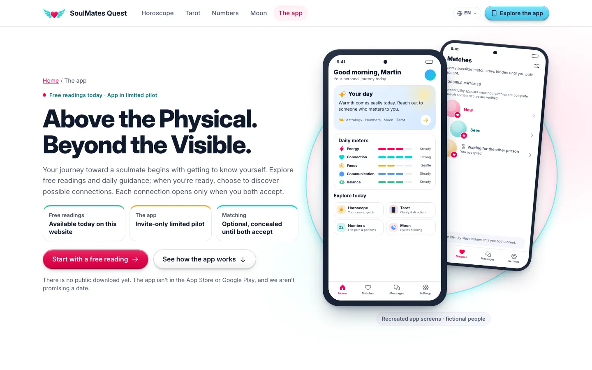

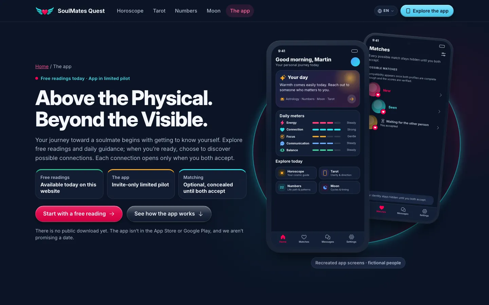

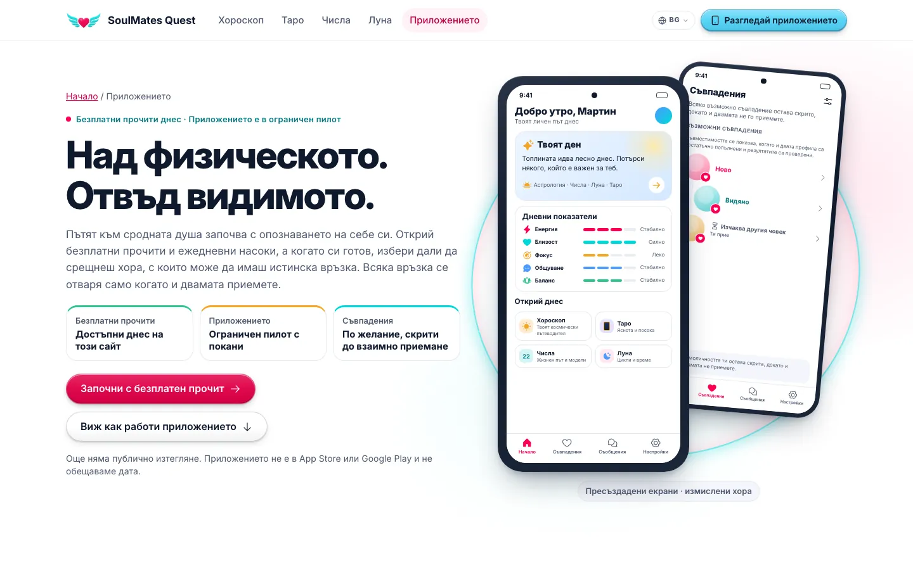

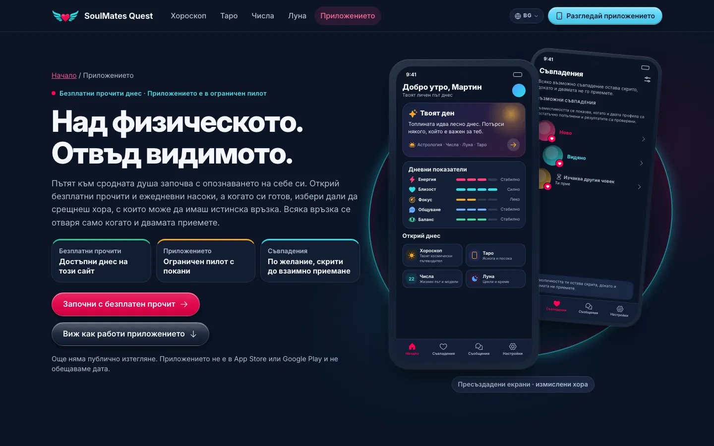

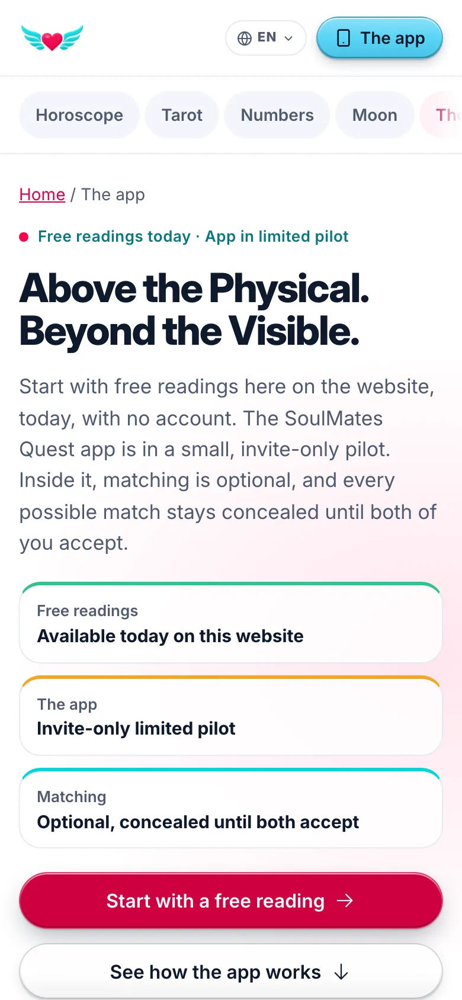

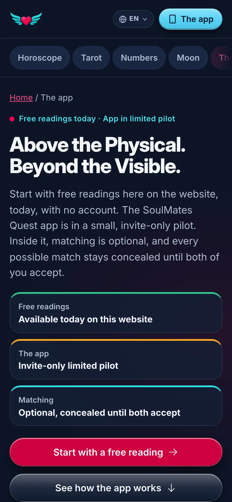

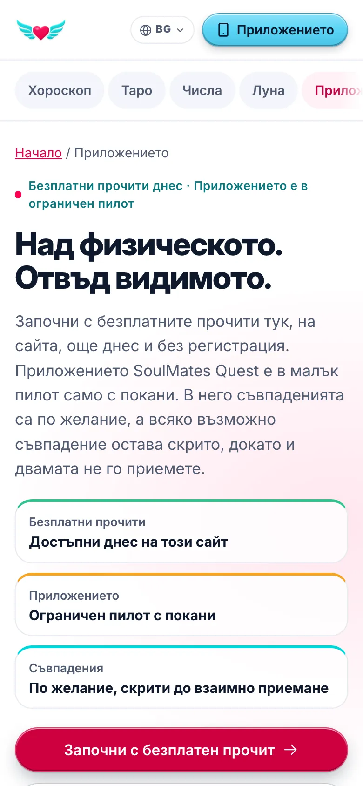

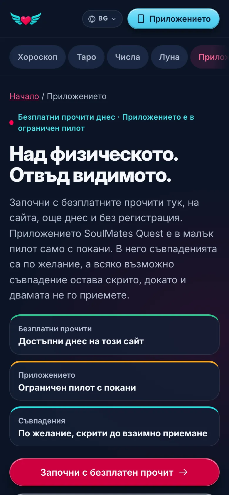
2 · Whole page, desktop (1440 px)

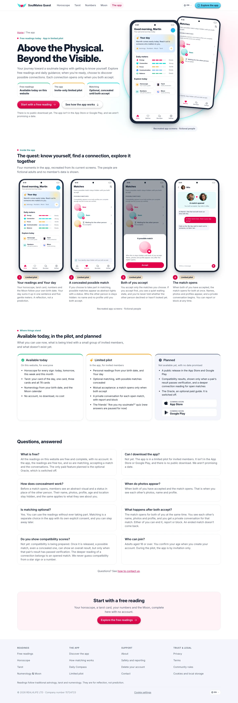

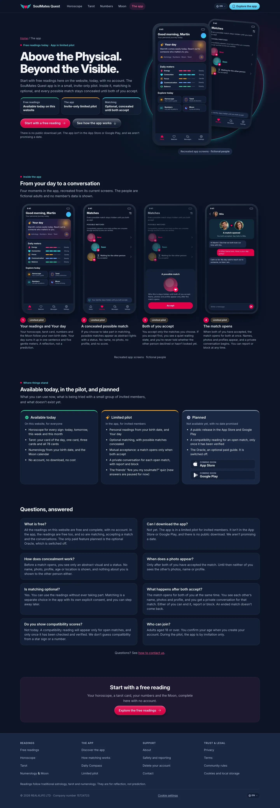

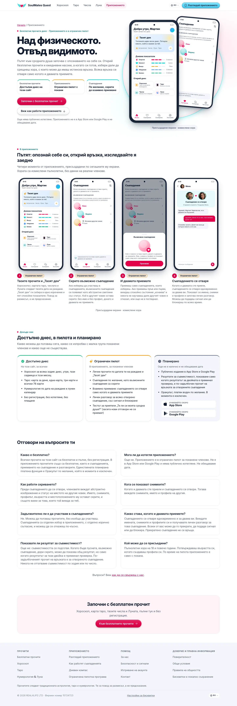

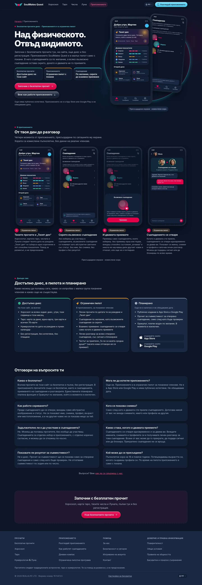
3 · Whole page, mobile (390 px)

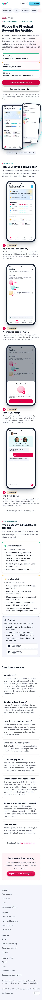

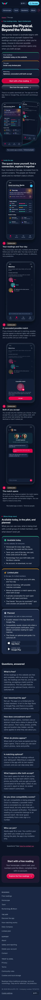

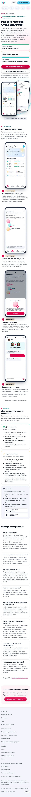

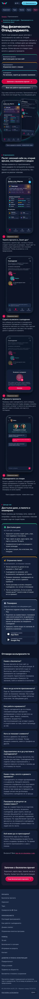
4 · Tablet, narrow phone, other pages (header label)

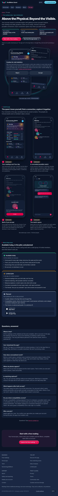

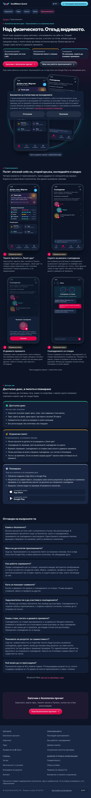


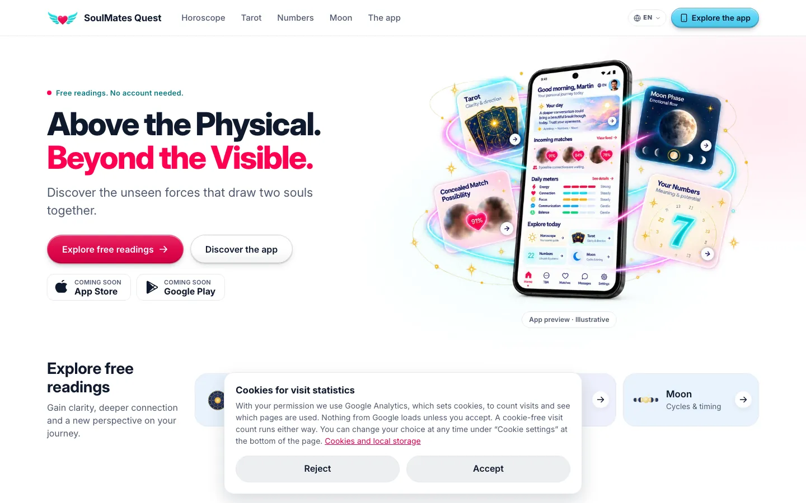

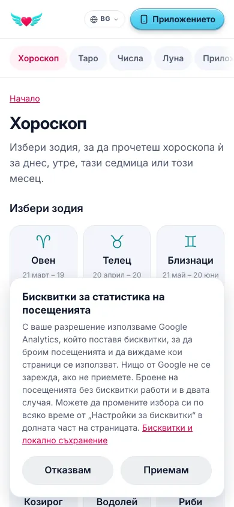